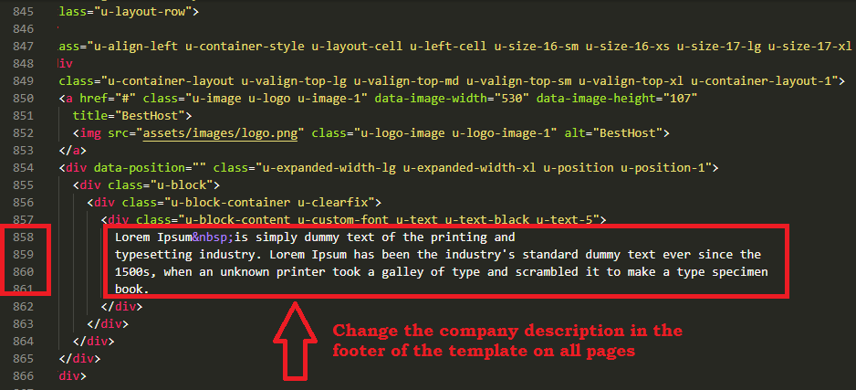

BestHost - Web site template
version 1.0
Documentation
Documentation
Thank you for purchasing a website template from our company. This manual will show you how to work
with
your
template,
how to edit it and make it a "live" website.
All pages content is made with HTML.
After unzipping the template package you will find 2 folders: "documentation" and "site".
Software requirements
Sublime Text 3, Notepad++, Visual Studio Code or any other code editor. Used to edit the .HTML, .PHP, .JS and .CSS files.
The following scheme displays the template files structure:
1. Documentation - contains documentation on template editing and installation.
2. Site - contains a template .html file and an assets folder.
Site/assets/
- css, images, js, scripts - folders.
Working with the template you need to edit the .html and .php files.
Editing HTML and CSS files
All editable HTML files are located in "site" folder of the template package (index.html) Each file represents a single template page.
To open .html file with Visual Studio Code application, you should right mouse click on the file and in the context menu select Open with > Visual Studio Code. When the file is open, you can start editing it.
Visual Studio Code is a recommended application as it allows you to edit the HTML files content. But you can use another program to edit the files.
CSS files are used to change the template appearance like fonts (font-family, font-size, color etc), backgrounds, column width values etc. You can edit the css files with Visual Studio Code application.
Editing the site name, logo and Title

Custom Fonts
Some templates may contain the non-default fonts used in the design. By default, the internet browser can render only fonts that are installed to your operating system. In other words, if your website design uses some custom fonts and these custom fonts are not installed on your website visitor's computer, custom fonts won't be displayed. Default fonts will be rendered instead. That's why web developers should look for some alternative solutions. In our templates custom fonts are embedded using Google Web Fonts technology.
How to edit text
These templates are HTML based, so all content is stored and could be accessed though the .html files.
1. Open your template package and go to the site folder.
2. There open index.html file with your HTML editor.
3. You can use the search tool CTRL+F to find any text you need.
4. Edit text in HTML editor. Save the file and open it with your Browser to see the changes.
How to edit images
Open the template folder, go to 'site/assets/images/' directory. You can upload your images with the same name and extension to replace the default ones.
The other way is to upload custom images with your titles and extensions. Then you’ll need to change the image file names in the html files.
1. Open .html file from the “site” folder with your html editor.
2. Use search tool CTRL+F to find the images in the html file.
3. Replace the image title and extension.
1. Open the template folder.
2. Go the site/assets/scripts/ directory.
3. There open the 'form-contact.php' file with your editor (Visual Studio Code, Sublime Text 3, Notepad etc).
4. Notification line 11 and 12.
You should see the following line:
'from' => 'Your Email',
'to' => 'Your Email'
replace Your Email with your email address.
Make the same changes in the file site/assets/scripts/form-footer.php
In order to make your site "live", you need to upload all the content of "site" folder from your local computer to your hosting server.
Please note: your website root depends on the directory structure on your hosting server. If you upload the "site" folder itself into your server, the root to your website will be http://your_domain_name/site. To avoid this and make the website root http://your_domain_name/, please open the "site" folder and upload the folder content.